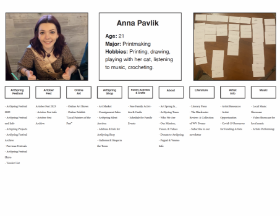
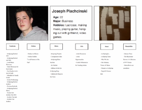
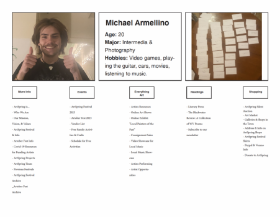

Website
Redesign
ArtSpring WV | 2023
XD, HTML & CSS
We were tasked with redesigning an already-existing arts festival website, ArtSpring West Virginia. We went through wireframes, mock-ups, user testing, the whole nine yards. We then coded our newly made site on Visual Studio, using HTML & CSS on a 960 grid.
You can view the website here:
Process
This was the first website redesign I had ever done. I was nervous, but excited. We started off slow, with researching the website and making an inventory of what was on the website. After this, we did a card-sorting exercise. We wrote down every important tab on an index card, and tasked 3 people to rearrange the tabs in whatever order seemed best, and then they added tab names. We weren't meant to copy theirs exactly, but we were to look for patterns, where things were commonly put in the same place. To the right you can see my 3 card sorting diagrams, then below is my final inventory of where everything was supposed to be put.
- 
- 
- 
After we knew where we wanted everything to go, it was time to start mocking up our pages. T start, we created wireframes of what each page would look like. This is barebones filler text and filler images, just to get an idea of where we want everything to go. These are extremely unfinished, and as you'll notice, most of them changed drastically. This is a normal process for web design, everything always changes. These are merely guides for a designer to get a general idea of what they want to do.
Once we got our wireframes in a place we felt comfortable with we moved onto these things called “style tiles”. These are essentially moodboard-type designs which showcase colors, typefaces, layout, inspiration, etc. for our website. We initially started with the just 2, then after critiquing these, we combined the best elements from both into one, adding and subtracting elements based on the feedback from the group critique.
Mock-ups
With our chosen style tile completed, we moved onto mocking each page up. This was a tedious task, as every element needed to be aligned to our 960 grid. The first couple of pages are always the hardest, but once you make it over that hump, each page gets easier and easier. Besides the coding, this was most definitely my favorite part of this project. The trial and error periods make the outcome feel so much more satisfying than if I had gotten each page exactly how I wanted it on the first try. Here are a couple of those mock-ups:

From there it was history!
After the mock-ups, we got straight to coding. Our process was from barebones HTML, to filling in semantic classes and 960 classes, to CSS. This was only my second ever project Using HTML and CSS, but I felt as if I learnt so much more than I expected. I genuinely had a lot of fun on this project, and its what made me fall in love with web design. I truly hope my future holds a career where I get to design for web and screen!